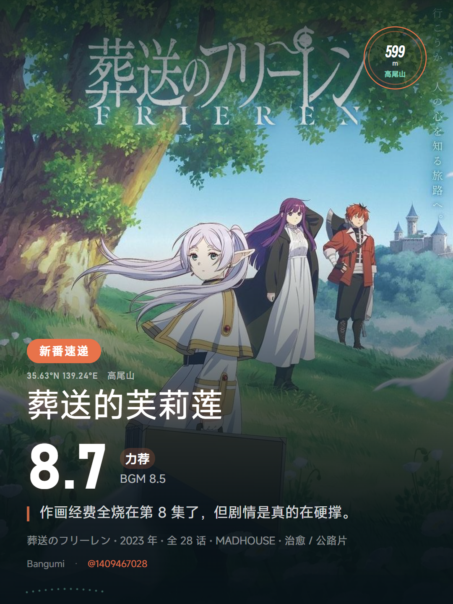
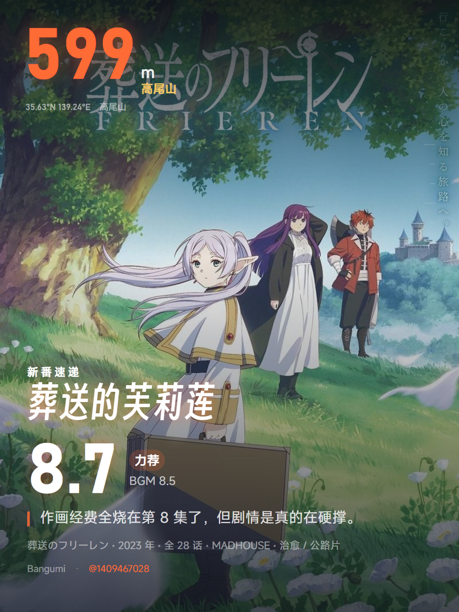
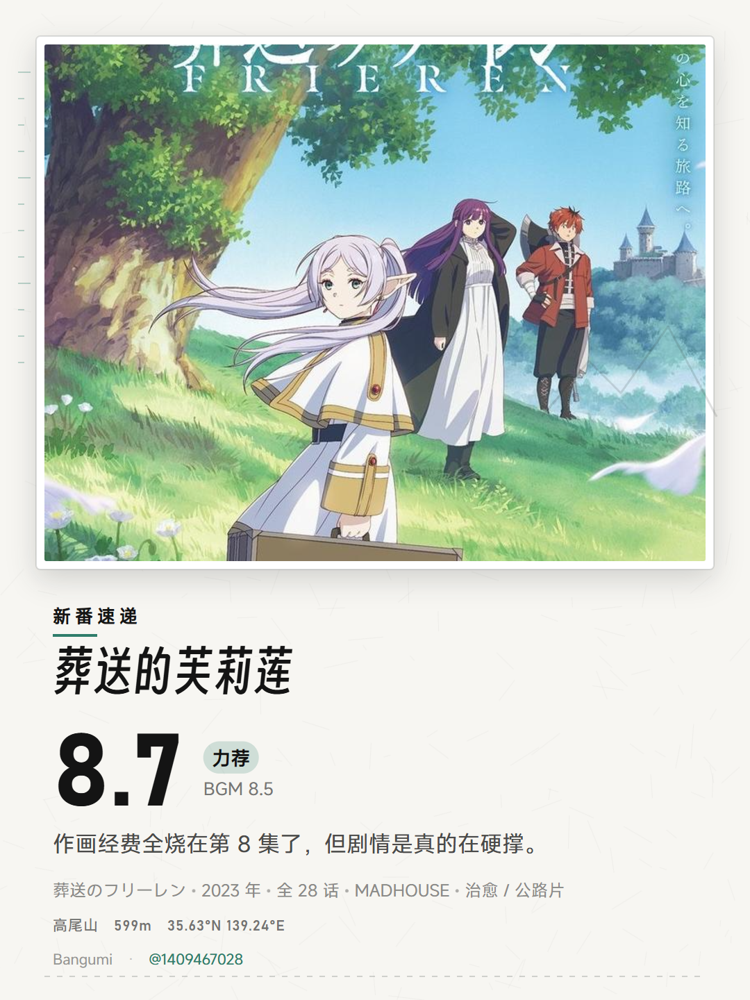
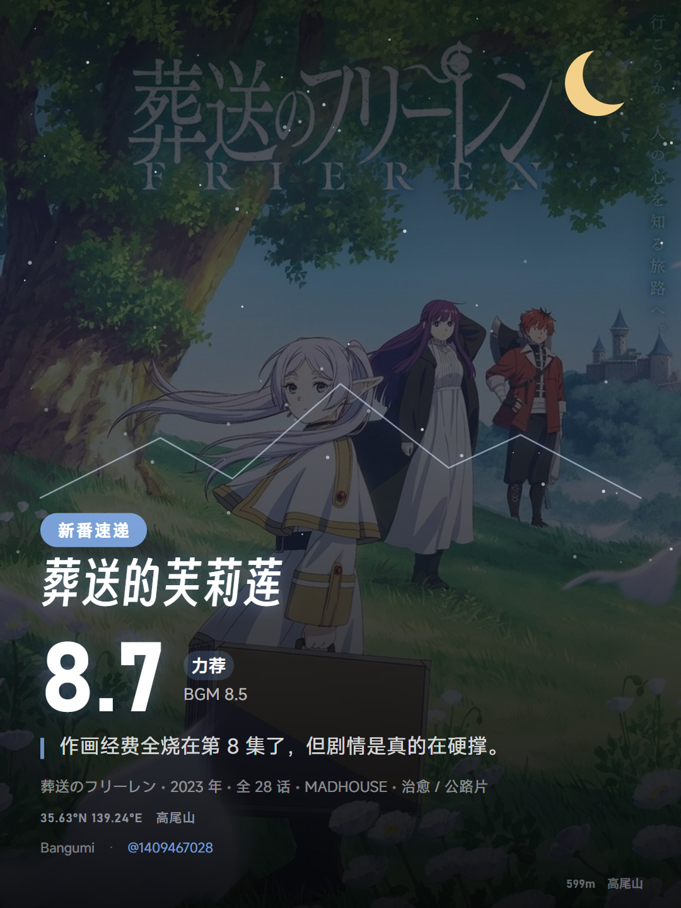
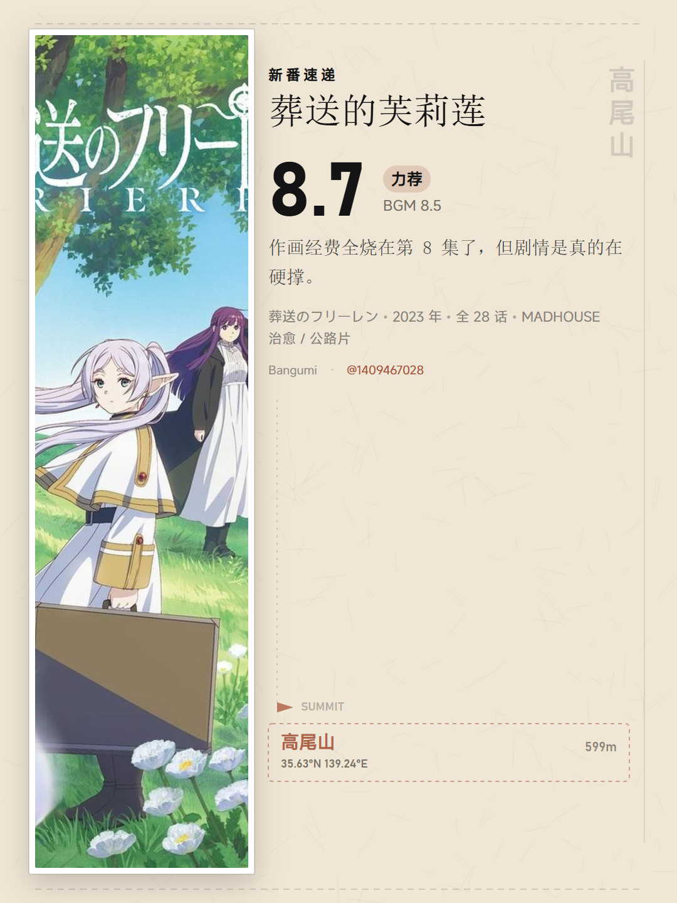

示例条目：葬送的芙莉莲（Bangumi #400602）· 我的评分 8.7 · Bangumi 站内 8.5 · 角标「新番速递」· 山：高尾山
这一族主题的共同点是海报是主角：满幅铺满或大块占据，标题与评分直接叠压在图上；
每张图都会印一座《向山进发》里真实出现过的山的海拔与经纬度。





海拔与经纬度都按日本国土地理院数据核对过，选哪座，图上印的就是哪座：
高尾山 599m富士山 3,776m谷川岳 1,977m 天览山 197m多峯主山 271m天觉山 445m 大高山 493m日和田山 305m子之权现 640m 关八州见晴台 770m武甲山 1,304m筑波山 877m 御岳山 929m大平山 159m三ツ峠山 1,785m 雾峰 1,925m瑞墙山 2,230m金峰山 2,599m 赤城山 1,674m
每套主题还能再换 8 套山色配色，并可切换 3:4 / 4:5 / 9:16 / 1:1 四种比例与 720 / 1080 / 1440 三种导出宽度。
在线使用：https://ijichinijika99.github.io/xhs_aoi-cover/